Journal Article
Identifying climate and environmental determinants of spatial disparities in wheat production using a geospatial machine learning model
https://doi.org/10.1080/15481603.2025.2533487Overview
This paper builds a geospatial machine learning workflow that combines hotspot detection, geographically optimal zones-based heterogeneity (GOZH), and determinant interaction analysis to explain why wheat production varies across Australia and how the dominant controls changed between 2016 and 2021.
Abstract
Wheat production is crucial in global food security and sustainable development, especially under severe global climate change, frequent extreme weather events, and significant population growth worldwide. A deeper understanding of spatial variation in wheat production and its determining factors is essential for implementing different cultivation practices, water and fertilizer management, and adaptive variety selection across different regions. However, existing methods primarily focus on identifying single-variable factors while lacking geographical spatial characteristics, which may lead to an incomplete exploration of spatial disparities in wheat production, predictions, and responses to changes in determining factors. This study develops a geospatial machine learning model by integrating spatial autocorrelation, spatial stratified heterogeneity, and decision tree learning to identify spatial disparities of wheat production and their determinants. The model is applied to wheat production analysis in Australia, the world's fifth wheat-producing country in 2022. First, a spatial autocorrelation method is employed to identify hotspot areas of wheat production in Australia. Next, the geographically optimal zones-based heterogeneity (GOZH) model, which integrates spatial stratified heterogeneity and decision tree learning, is used to identify determinants and their interactions that drive spatial disparities in wheat production. Finally, the developed geospatial machine learning model is evaluated by comparing its effectiveness with the commonly used geographical detector model. The results demonstrate pronounced spatial heterogeneity in Australian wheat production driven by environmental, climatic, and soil factors and their interactions. Identifying these spatial determinants enables more efficient crop management - such as targeted sub-regional practices, climate-adaptive variety selection, and soil health strategies - thereby supporting food security and sustainable agricultural systems.
Figures and Tables
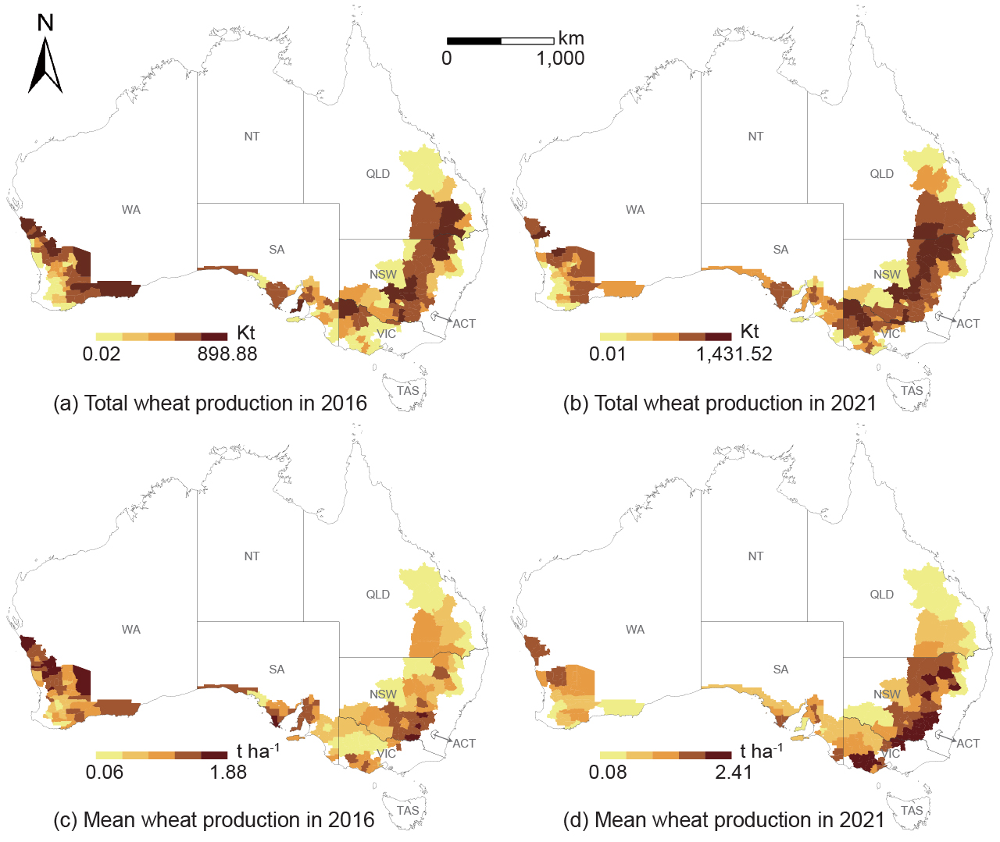
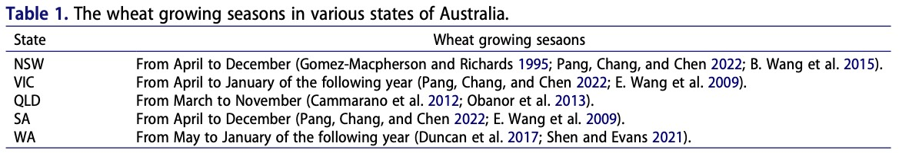
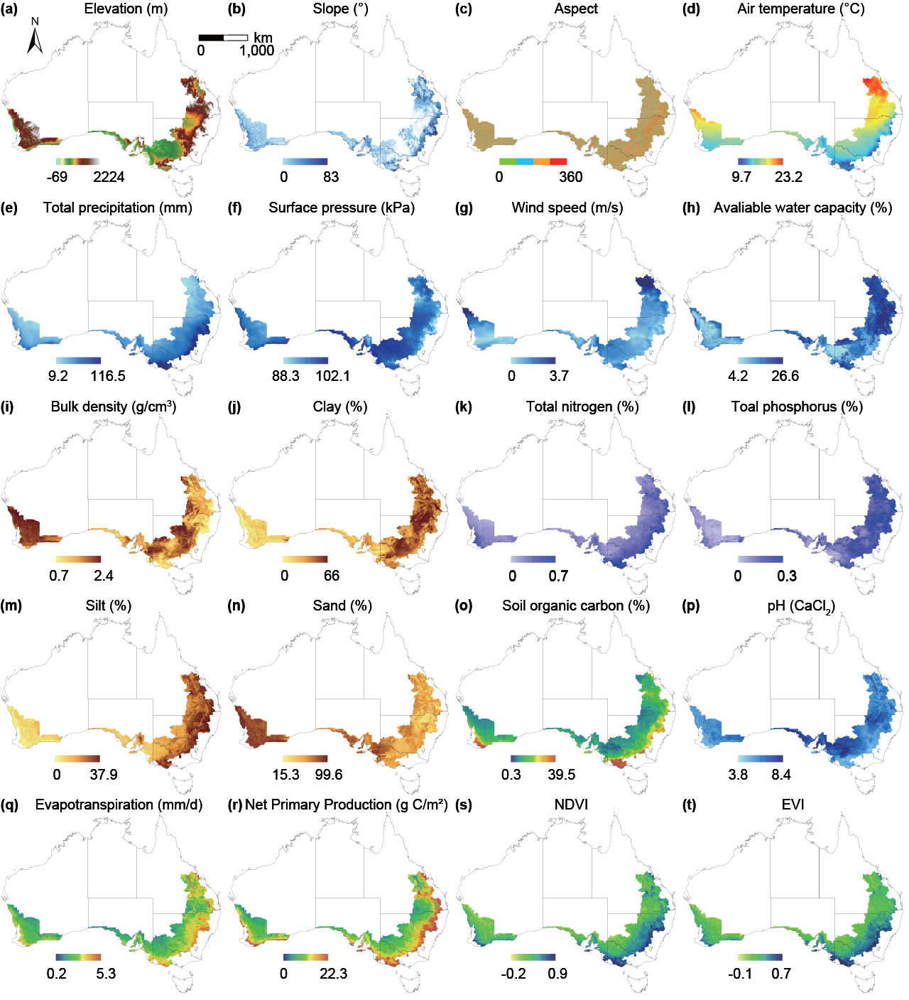
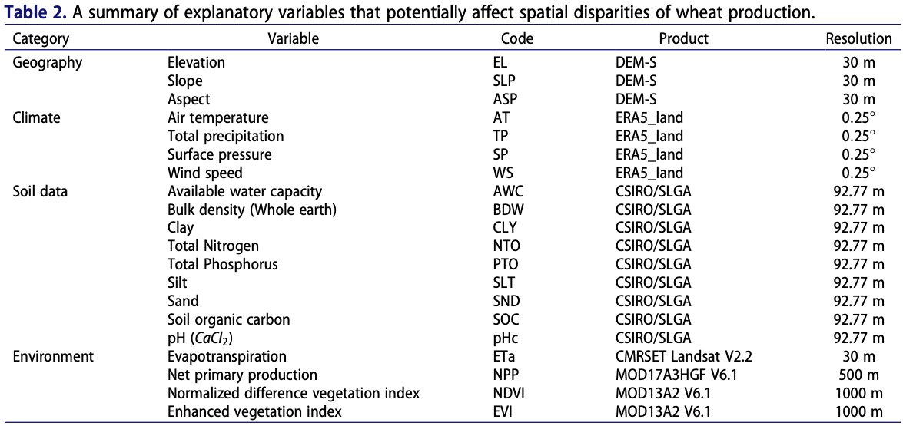
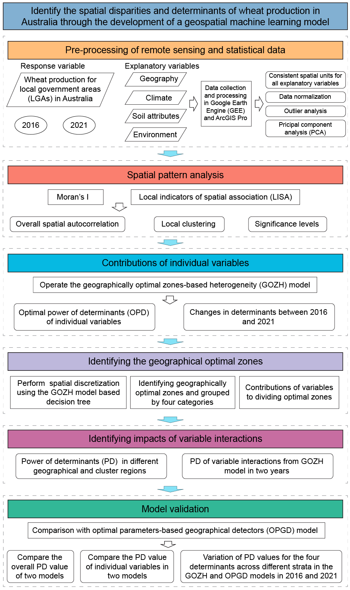
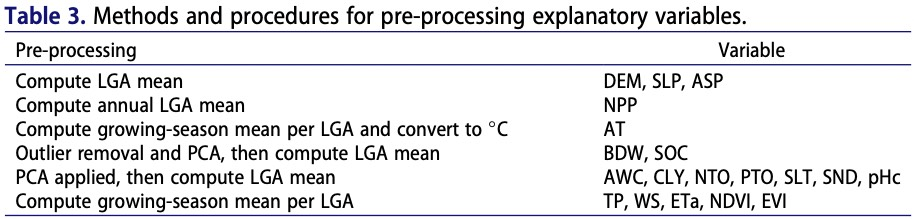
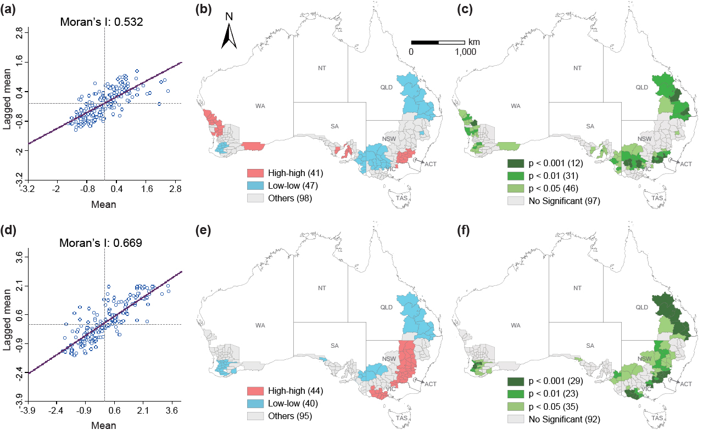
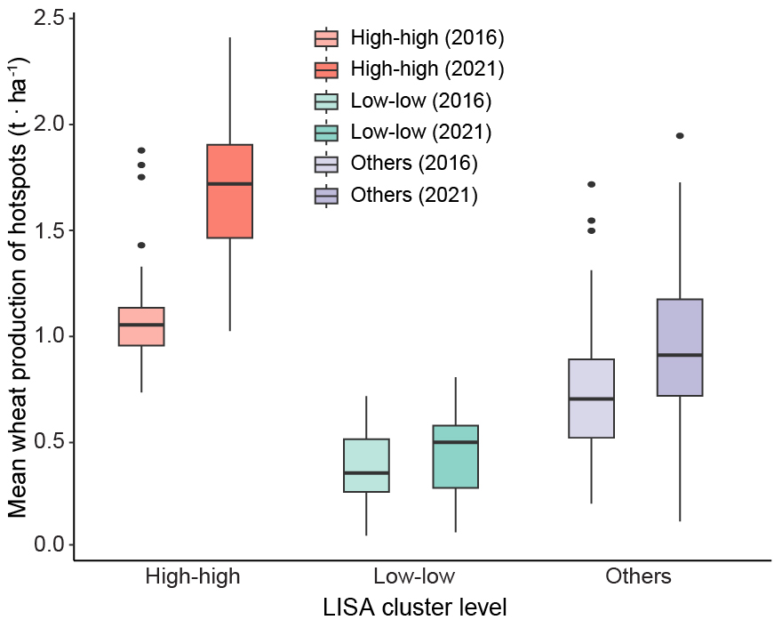
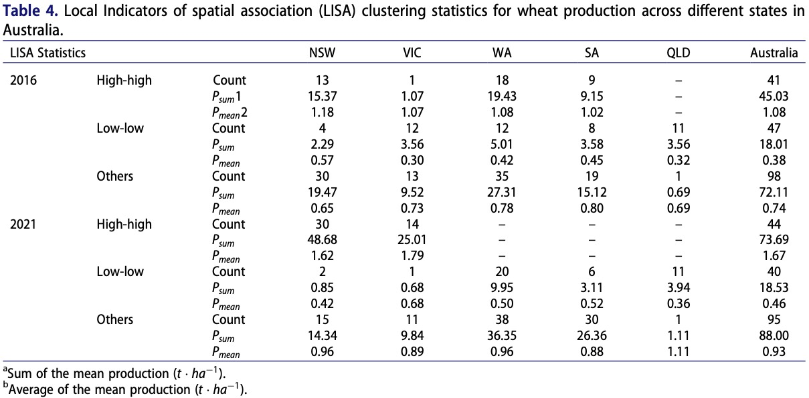
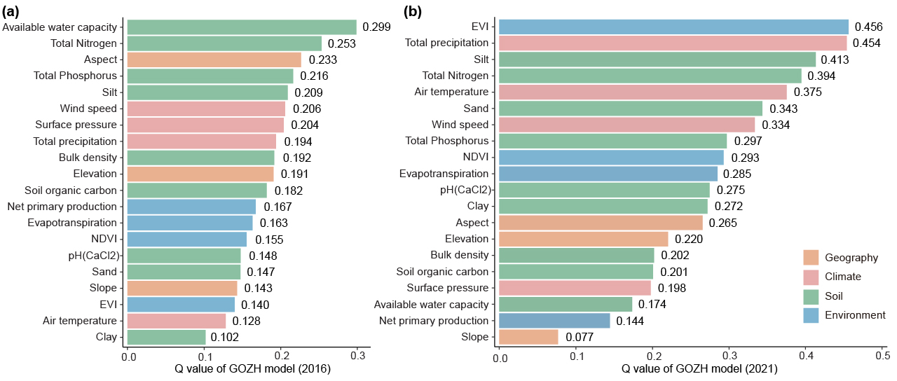
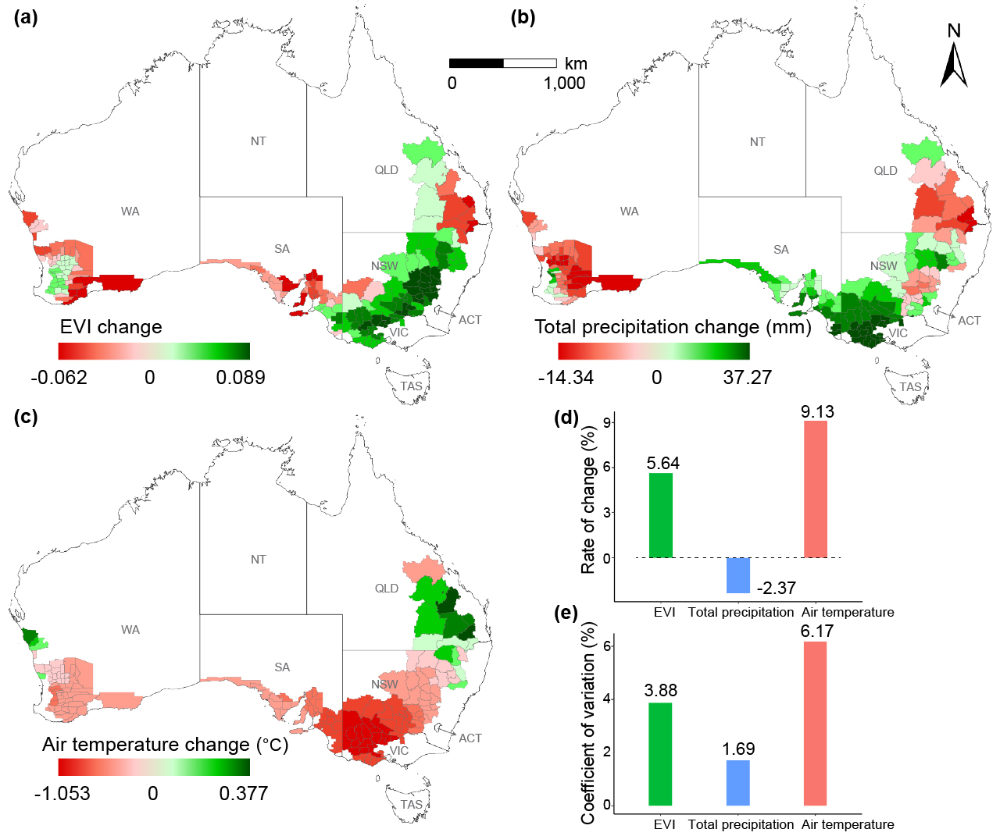
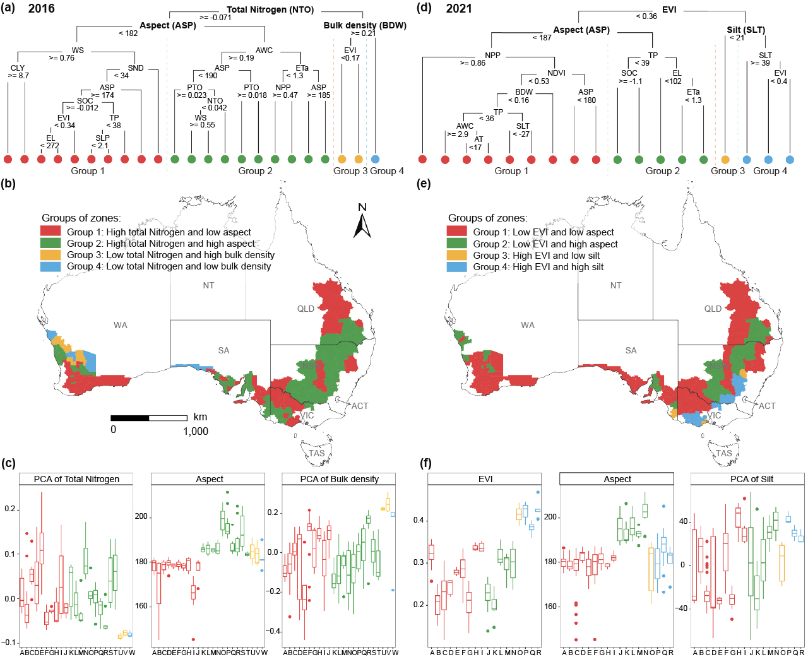
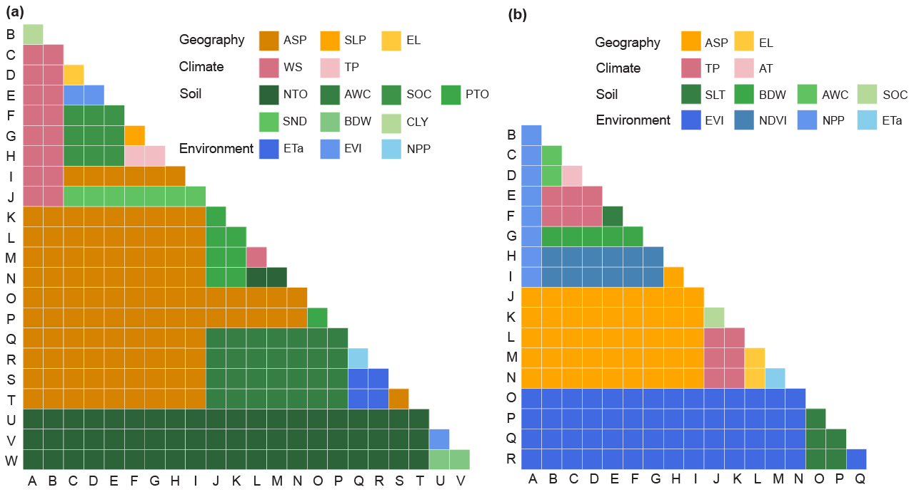
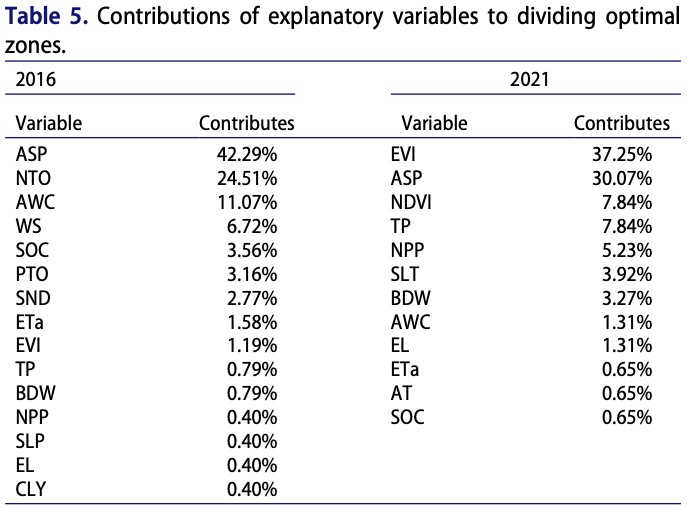
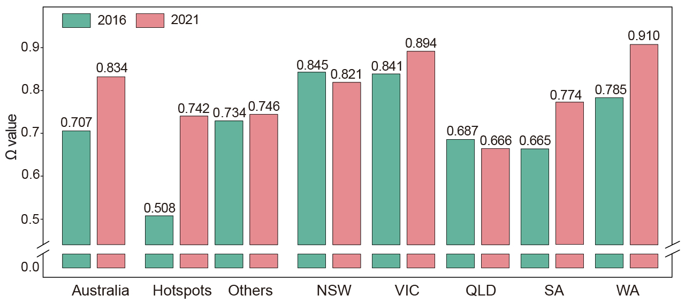
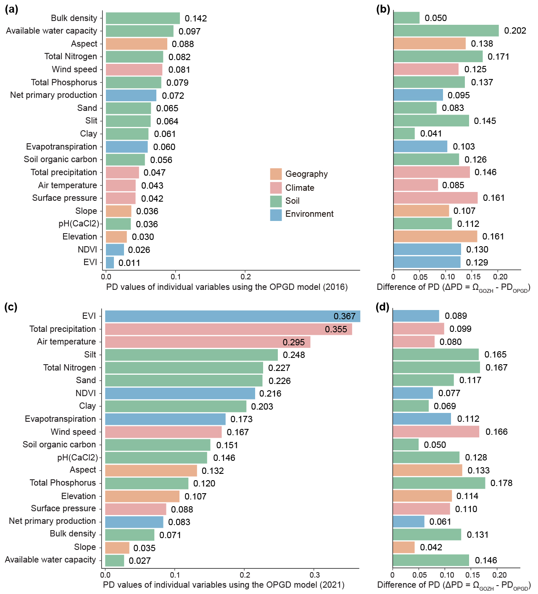
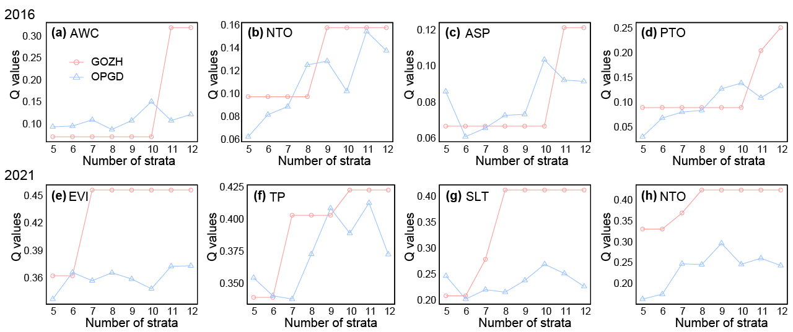